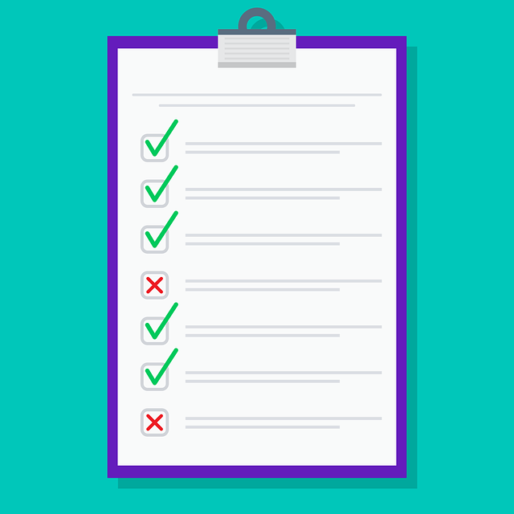

Lista de control

Esta herramienta se utilizará, acompañando y guiando al alumnado, durante todo el proceso de elaboración del programa, desde la investigación inicial hasta el desarrollo del producto final. Esta evaluación la dividiremos en tres fases:
- Fase de análisis e investigación. Evalúa la capacidad del alumnado para recopilar información rigurosa y veraz.
- Fase de edición y diseño. Evalúa la competencia digital del alumnado. Se comprueba si es consciente de la autoría y de la propiedad intelectual, así como la funcionalidad del diseño.
- Fase de revisión. Evalúa la autonomía y responsabilidad del alumnado. Se debe comprobar el formato, la estructura, así como la información incluida.
La recogida de datos se realizará mediante la autoevaluación del alumno, que rellena la lista de control obligándole a revisar su propio trabajo, mediante observación directa del profesor que comprueba la lista de control del alumno y, finalmente, a través del análisis del producto final, cotejando el programa de concierto con la lista de control.
Las posibles variables que pueden darse en su implantación en el aula y requieren un tratamiento específico son:
- Falta de rigor musicológico. Si se detectan errores en este aspecto, se analizarán los datos para comprobar si las fuentes de información son fiables y se recomendarán fuentes bibliográficas específicas.
- Problemas técnicos o digitales. Si se detectan errores relacionados con las licencias de propiedad intelectual o con el diseño, se considerará la inclusión de tutoriales adicionales.
Rúbrica
Este instrumento se utilizará en la fase de evaluación final del proyecto. Su objetivo es valorar la calidad del producto entregado por el alumnado. La recogida de datos para la rúbrica se realizará mediante:
- Análisis del producto. Mediante el archivo PDF del programa de mano se contrastan los datos con la rúbrica.
- Observación directa del trabajo de aula. Se comprueba cómo el alumno utiliza las herramientas digitales para el diseño y la maquetación, basándome en su proceso y no solo en el resultado.
Las posibles variables que pueden darse en su implantación en el aula y requieren un tratamiento específico son:
- Capacidad de síntesis. Si algún alumno se extiende demasiado, se le ayuda a identificar qué información es realmente relevante para el público.
- Bajo nivel de competencia digital. Si el alumnado presenta dificultades técnicas en el diseño y la maquetación, se le pueden ofrecer plantillas determinadas así como algún tutorial adicional.